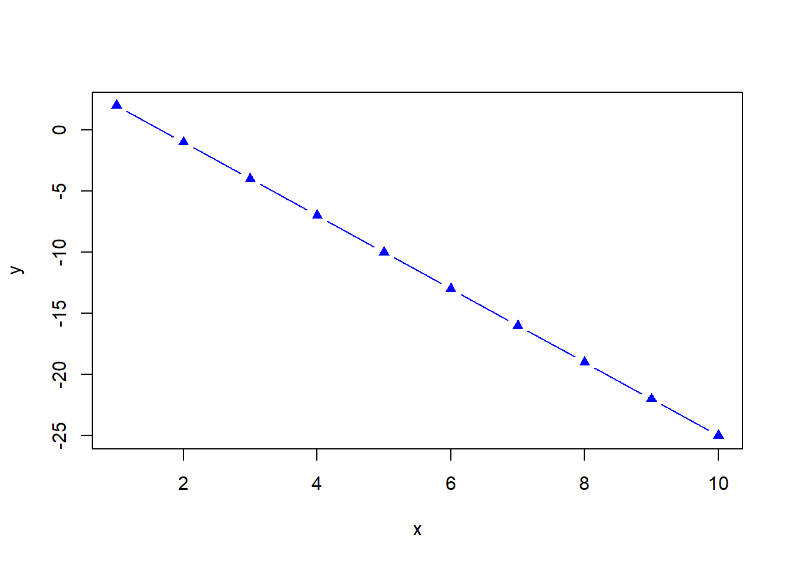

math <- 88
chemistry <- 87.66667
writing <- 86
art <- 91.33333
history <- 84
music <- 91
physical_education <- 89.33333
final_scores <- c(math, chemistry, writing, art,
history, music, physical_education)Working with Vectors
1. Indexing Vectors By Position
In the last mission the grades for each subject were found and stored in variables as follows;
We can index vectors to select a subset of the elements they contain. Within a vector, every element has a position. R is a 1-indexed programming language, which means that the first element in a vector is assigned a position of one.
Examples
We can extract values from the vector by specifying their position in brackets ([])
final_scores[3][1] 86Extract multiple values of a vector by specifying more than one position , use (:).Selecting first to fourth elements
final_scores[1:4][1] 88.00000 87.66667 86.00000 91.33333Selecting multiple vectors that are not next to each other
final_scores[c(1,3,7)][1] 88.00000 86.00000 89.33333Practice 1
- Write code to create a new vector, stem_grades, containing only the math and chemistry final grades.
- Create a new vector, non_stem_grades, containing the final grades in the other classes.
- Calculate the mean of each vector and save their values in avg_stem_grades and avg_non_stem_grades.
- Which grades are higher
Practice 2
Create a vector of character data called class_names containing your classes in the following order:
- math
- chemistry
- writing
- art
- history
- music
- physical_education
2. Naming the elements of a Vector
We now have two vectors:
- final_scores, containing your class grades (numeric data).
- class_names, containing the class names (character data).
In R, vectors may have attributes assigned to them. Attributes provide information, such as names, about the values stored in the vector. To assign names to vector elements, we can use the names() function.
Naming at work
The code below shows how you would name a vector containing two subjects:
math_chemistry <- c(88, 87.66667)
class_names <- c("math", "chemistry")
names(math_chemistry) <- class_namesPractice 3
Use the class_names vector to assign names to elements of the final_scores vector.
Answer
class_names <- c("math", "chemistry", "writing", "art",
"history", "music", "physical_education")
names(final_scores) <- class_names3. Indexing Vectors By Names
If we want to return the score in chemistry class, we can index math_chemistry by the class name chemistry:
math_chemistry["chemistry"]chemistry
87.66667 As with indexing by position, we can index by name to return multiple elements using c():
math_chemistry[c("math","chemistry")] math chemistry
88.00000 87.66667 Practice 4
- Index the final_scores vector by name to create two new vectors:
- liberal_arts: Containing your writing and history final grades.
- fine_arts: Containing your art and music final grades.
- Calculate the average of each new vector.
4. Comparing Values And Logical Data Types
we can write code using comparison operators to compare values based on specific conditions, such as “greater than,” “less than,” or “equal to.”
Practice 5
Write an expression using a comparison operator to answer the question:
- Is the average of liberal arts(writing and history) final grades greater than the average of fine arts(art and music) final grades?
5. Comparing Single Values Against Vectors
Consider Answering the question: “Is the final math grade higher than the grade in my other classes?”
final_scores["math"] > final_scores math chemistry writing art
FALSE TRUE TRUE FALSE
history music physical_education
TRUE FALSE FALSE When comparing the math grade (a vector containing a single value) to a vector containing all grades, R replicates the shorter vector until it is the same length as the longer vector. Then it performs the operation.
Storing Logical Data
Like numeric and character data, logical data can be stored in vectors. If we want to store the results of comparing the math grade with the other grades as a variable called math_comparison, we can write:
math_comparison <- final_scores["math"] > final_scores
typeof(math_comparison)[1] "logical"Practice 6
- Use the
mean()function to calculate the grade point average from final_scores. Store this in a variable named gpa. - Compare final_scores to gpa to see whether the grade in each class is higher than the gpa. Store the logical output in a vector named above_average.
6. Logical Indexing
Logical indexing will compare each value in a target vector against the corresponding value in a logical vector.
- If the corresponding value is TRUE, the resulting vector will contain that value.
- If the corresponding value is FALSE, the resulting vector will not contain that value.
Earlier in this mission, we compared the math grade with grades in other classes to see if it was higher. Let’s store the result of this comparison in a vector of logical values:
logical_vector <- final_scores["math"] > final_scoresWe can now index final_scores using logical_vector. This will allow us to create a new vector containing only class grades that are lower than the math grade:
final_scores[logical_vector]chemistry writing history
87.66667 86.00000 84.00000 Practice 7
By indexing above_average into final_scores, create a new vector named best_grades that contains only class grades that are higher than your GPA.
gpa <- mean(final_scores)
above_average <- (gpa < final_scores)
best_grades <- final_scores[above_average]7. Performing Vector Arithmetic
Your friend, Johnny, who has the same classes as you this year, emailed you all his average exam, homework, and project grades in the following format:
- Tests: 76, 89, 78, 88, 79, 93, 89
- Homework: 85, 90, 88, 79, 88, 95, 74
- Projects: 77, 93, 87, 90, 77, 82, 80
Order : math, chemistry, writing, art, history, music, physical_education
Vector Arithmetic - II
You start by creating three vectors, one for each assignment category, to work with:
tests <- c(76, 89, 78, 88, 79, 93, 89)
homework <- c(85, 90, 88, 79, 88, 95, 74)
projects <- c(77, 93, 87, 90, 77, 82,80)Task : Calculate Average score for each subject and store as vector
Adding
sum <- tests + homeworkPractice 8
- Calculate Johnny’s average scores for each class by adding the tests, homework, and projects vectors and dividing by 3.
- Store the resulting vector in a variable named johnny_scores.
- Use the
mean()function to calculate Johnny’s grade point average from johnny_scores.
8. Vector Recycling
Whenever there’s a mismatch in the length of two vectors that you’re comparing, the shorter vector is recycled (or repeated) until it matches the length of the longer one.
To illustrate how R’s recycling behavior works when we perform operations on vectors of different lengths, let’s shorten your homework vector to only two values:
tests <- c(76, 89, 78, 88, 79, 93, 89)
homework <- c(85, 90)
sum <- tests + homeworkPractice 9
Here are Kate’s test, homework and project grades:
- Tests: 76, 89, 78
- Homework: 85, 90, 88, 79, 88, 95, 74
- Projects: 77, 93, 87, 90, 77, 82, 80
Calculate the sum of Kate’s test, homework, and project grades and store the resulting vector as a variable named recycling. Note the resulting warning message.
9. Appending Elements to A vector
To add additional elements to a vector, you can use c() to create a new vector consisting of the existing vector plus the new elements you want to add to it:
tests <- c(tests, 99, 67)Practice 10
- Add the rest of Kate’s test grades (88, 79, 93, 89) to the tests vector. Save the new vector containing all Kate’s grades as tests, which will overwrite the incomplete tests variable.
- Use vector arithmetic to calculate Kate’s final average grade for each class from the tests, homework, and projects vectors. Save the resulting vector as kate_grades.
- Assign class names to the elements of kate_grades.
- Calculate Kate’s gpa from kate_grades using the
mean()function and save the result as a variable named kate_gpa. - Use comparison operators and logical indexing to create a new vector, kate_low_grades, containing final grades for classes in which Kate earned a grade lower than kate_gpa.
10. Vectors - Closing
x <- 1:10
y <- -3*x + 5
plot(x, y, type = "b", pch = 17,
col = "blue", xlab = "x", ylab = "y")